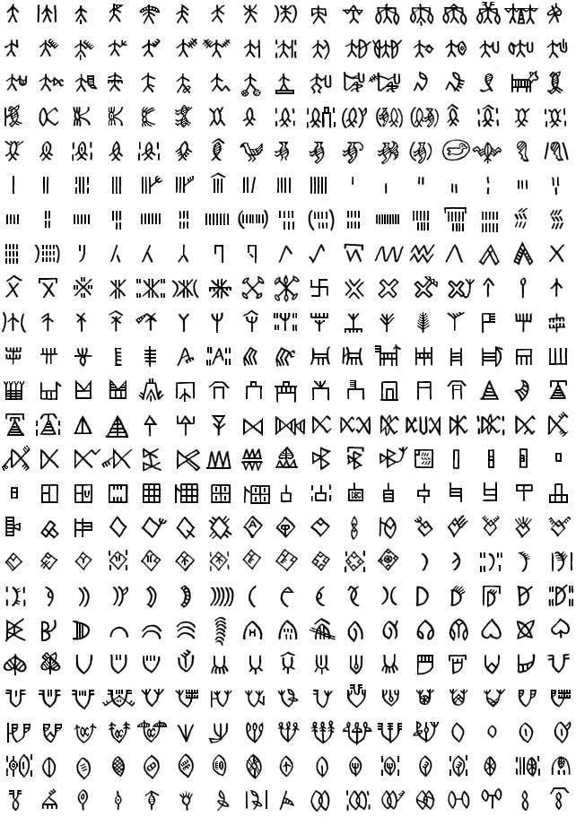

Язык Поэдрума
Поэдрумский язык — один из древнейших языков Мерионы, лёгший в основу языка Ордена Воли и повседневной речи жителей острова. Ниже приведён краткий словарик основных терминов и речевых оборотов, которые чаще всего встречаются в текстах Кодекса.

Религиозная тематика
- Сеуэфе — воля, стремление.
- Эфе — высшее выражение воли; может употребляться либо в общем значении, либо в отношении к Демесу.
- Эльхелек (пер. «человек») — существо с менталой, имеющее сеуэфе.
- Хелек (пер. «зверь») — просто разумное существо.
- Эль — проявление божественности; принадлежать может кому угодно, никак не связано с сущностью Богов.
- Демьис — Демес.
- Эль-ариб'Эфе — Орден Воли.
Ругательства и оскорбления
- Кафэб — обманщик, лжец; рядовое оскорбление.
- Плутократ — угнетатель, работорговец.
- Аль'тахид — грубый посыл.
- Вей'ела — предатель; серьёзное оскорбление.
- Эль'элиа! — гневное безотносительное восклицание.
Золотое правило
- Ил'хатил (пер. «убийца») — тот, кого можно убивать; вооружённый противник; приказ атаковать.
- Лей'хатил (пер. «не-убийца») — тот, кого нельзя убивать; безоружный противник; приказ остановиться.
- Сэхуру (пер. «колдун») — тот, кто использует неестественные способы борьбы; ил'хатил, который не использует оружие.
Бытовые выражения
- [Хавэу эфе Демьис] — такова воля Демеса.
- [Мужера Демьис!] — во славу Демеса.
- [Юбер'и кулака мэнел] — да хранит тебя судьба; пожелание удачи.
- [Тайа'роти кели ралиш] — твоя воля будет жить вечно; пожелание перед смертью.
- [Мурхэре тукеи'же хасса] — комплимент девушке; выражение глубокой симпатии (по отношению к другому полу).
- [Телене ушараб] — решительный отказ.
- [Мэлаун мин энуа альхас ива] — да будет проклят твой род; гневное проклятие.
- [Вуффэр эльфир!] — призыв о помощи.
- Мэрхаба — приветствие.
- Альбах'фельнэ — прощание.
- Харха (пер. «воистину») — подтверждение; эквивалент слова «Да».
- Лэа — нет, никогда, ни за что; отрицание.
Пословицы
- По мертвым плачут, по живым поднимают кубки.
- Победа над слабым все лучше поражения.
- Бояться можно лишь того, кто боится тебя.
- Знанием добудешь сотни клинков, но клинком не добудешь знания.
- Знания идут из города, а мудрость — из песков.
- Горе полезнее тысячи мудростей.
- Сила побеждает одного, хитрость — сотни.
- Короли правят народом, а королями правят ученые.
- Скупой богач беднее нищего.
- Как свет тонет в ночи, так и восстает оттуда.
- Глаз никогда не бывает над бровью.
- Сильный судит, слабый обвиняет.
- Когда караван разворачивается… (продолжение в источнике)
География Мериона · Поэдрум · Язык